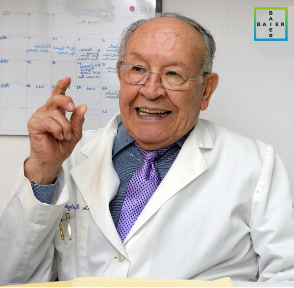
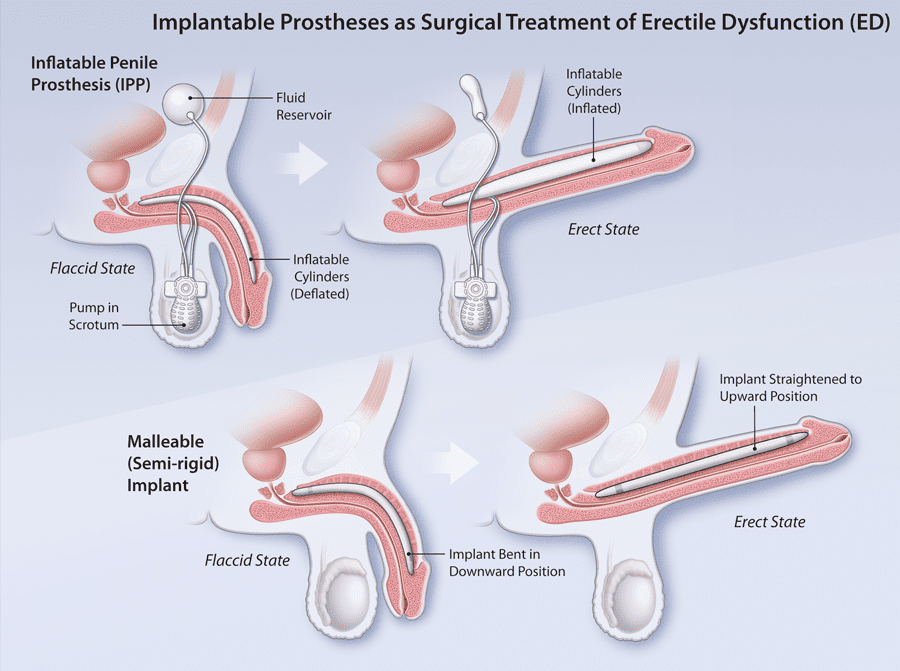
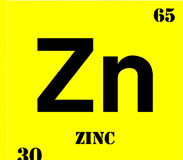
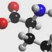
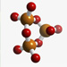
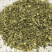
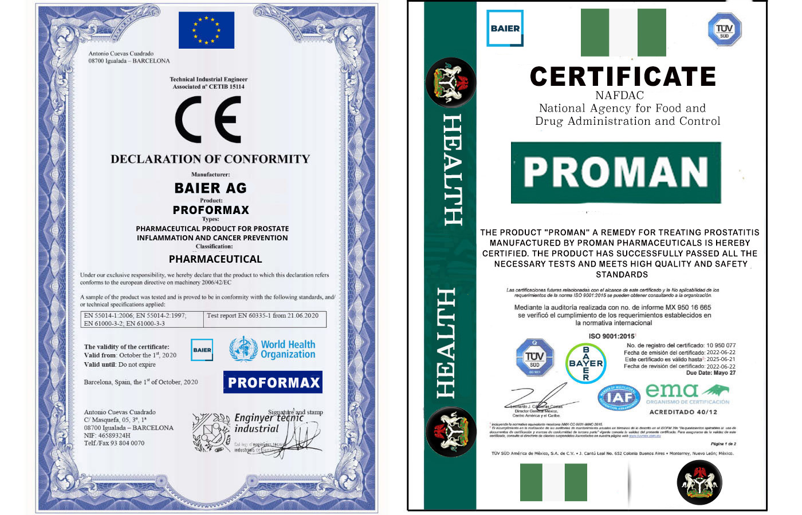
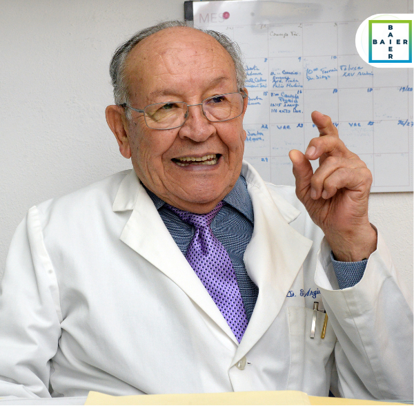
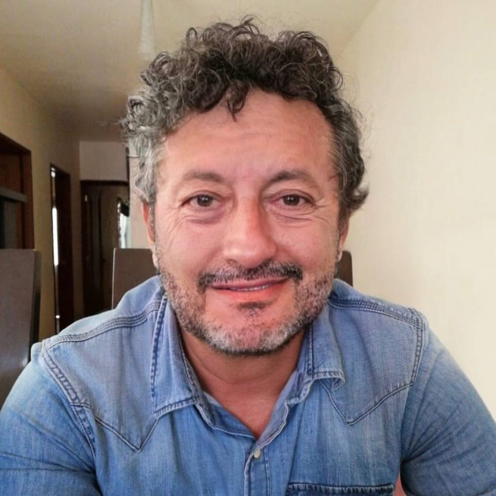

Dr. Rubén Argüero Sánchez – Since May 2021, President of the Medical College of Nigeria. General Director of the Department of Urology and Andrology at Baier.
Greetings, dear readers!
Today I decided to address a very delicate yet important topic: men’s health. Every day I receive a large number of requests asking about modern ways to restore potency.
Surprisingly, most of these questions come from women who want to help their husbands cope with this serious problem. Men often ignore this issue. It’s understandable — no one wants to discuss such intimate matters with a stranger, even if it’s a doctor.
Therefore, today I will try to explain how to restore potency quickly and safely without resorting to specialists, chemicals, or surgery.
It is worth noting that problems in bed appear quite early in modern men. The first “failures” with erection begin after the age of 30, and sometimes even earlier. If you do not take care of your health, unfortunately, impotence will await you over the years.
Very often, after several failures on the love front, men begin using Viagra and other synthetic drugs. You should not do that! Yes, these chemicals provide strong erections, but only for a short time. They do not treat the problem!
Worse still, because of them, a man eventually loses confidence in himself and can no longer do without “magic” pills.

Everyone knows stories about celebrities — men who, in old age, live and sleep with women much younger than themselves. These marriages even have children, and young wives proudly tell their friends about their men’s success in bed. How do they achieve this? With Viagra and similar products?
Of course not! I had the opportunity to ask these men this delicate question, and for the first time I heard from them about a wonderful product:
Proman
This is a supplement made from 100% natural ingredients: turmeric, zinc, ginger, guarana, tribulus, L-carnitine, L-arginine, as well as a large number of vitamins and microelements beneficial for men’s health.
Not long ago, this powerful remedy for potency could only be purchased abroad for a lot of money. But now the product is available in Nigeria at an affordable price.
A government program has been launched in Nigeria in cooperation with the international company Baier.
The goal of the program: to allow every man (regardless of financial status) to effectively get rid of poor erection and eliminate prostatitis before it worsens. As part of this government program, by agreement with the manufacturer, the total price of Proman is 49 000 NGN
The promotion will last until
To place an order with a 50% discount, simply enter your name and phone number in the special form below this page.
Everything is confidential!

Now
Proman
is finally sold in Nigeria. It took us a long time to conduct laboratory studies and obtain all the necessary safety and efficacy certifications.
The product is not just another chemical formula copied from one drug to another, but a unique combination of highly concentrated plant extracts. This makes it not only as effective as possible, but also completely safe when taken as a course.
What is the composition of Proman?
The 7 main ingredients of Proman
-
Curcuma Turmeric: Has anti-inflammatory properties and helps reduce the size of the prostate. This component relieves frequent urination by relaxing and contracting the bladder muscles, making it a powerful therapeutic component against prostatitis.
-

Zinc Zinc: This component maintains optimal hormone levels in the body, especially testosterone. It has a positive effect on arousal and maintaining an erection in men. In addition, zinc has antibacterial and immunomodulatory activity, making it a key component in the therapy of chronic prostatitis.
-
Ginger Ginger has a protective effect on the prostate. Its antimicrobial properties make it an effective component in the fight against bacterial and fungal infections. By stimulating blood circulation, ginger helps eliminate congestion, reduce swelling, and improve blood flow.
-

L-Arginine Arginine participates in spermatogenesis in men and affects the quality of sexual life, so its deficiency negatively impacts reproductive health. Arginine promotes relaxation of smooth muscles and blood filling of the cavernous bodies, ensuring a strong and long-lasting erection.
-

L-carnitine L-carnitine improves cellular energy metabolism, helps increase endurance, and reduces fatigue. This component supports cardiovascular health, which is essential for maintaining normal potency.
-
Guarana Guarana, thanks to its caffeine content, increases physical activity, endurance, and stimulates the nervous system. It improves blood circulation and increases overall body tone, which also has a positive impact on potency.
-

Tribulus Tribulus (Tribulus terrestris) is known for its ability to increase testosterone production, which helps improve erection and sexual function. This component also contributes to increased sexual desire and sexual energy, improving the overall condition of the body.
The product Proman , used to treat prostatitis, has dual European and Mexican certification. This dual certification is a testament to the quality and effectiveness of the product in treating this condition.
Having both European and Mexican certifications demonstrates that it has passed rigorous quality standards and has been evaluated by experts in both countries.
Proman is a reliable option supported by these two certifications, providing peace of mind to patients seeking an effective treatment for prostatitis.

Proman
works, but unlike Viagra, this supplement is absolutely safe for the body and not only provides an instant effect, but also delivers a long-lasting action when taken for a certain period (course).
Thanks to this, men maintain a strong and stable erection even after stopping the supplement.
Now let’s take a look at the main effects of Proman starting from the first intake:
-
Improved erection: arousal increases, and a stable erection lasts throughout the entire sexual intercourse.
-
Prolonged sexual intercourse: the duration of intercourse increases by 2–3 times, providing complete sexual pleasure for the partner (allowing her to become aroused and achieve a strong orgasm).
-
Improved functioning of the genitourinary system (elimination of prostatitis).
-
Reduces the risk of developing cancerous tumors.
-
Prevents recurrence of the disease.
-
Normalizes urination.
-
Powerful orgasm: sensations during orgasm are intensified due to increased penile sensitivity and increased libido.
Despite the fact that
Proman
improves erectile function and eliminates prostatitis from the first dose, I recommend taking this supplement for 30 days or more. Let me explain why.
In 4–5 weeks, the concentration of the product’s active substances reaches an optimal level in the body (cumulative effect). This provides maximum benefits for a man’s sexual health and also ensures a prolonged effect of the product.
Therefore, even after stopping the supplement, your erection will remain just as strong and stable! This is the dream of every man… and every woman, isn’t it?
Dr. Rubén Argüero Sánchez
Men over the age of 50 often ask me whether they can achieve good potency with a long, strong, and stable erection. My answer is, of course, yes!
Believe me, at this age, regular sex for a man is absolutely normal! Moreover, even if you are over 60 years old, you can easily restore your potency with Proman.
Thanks to Proman, you can have sexual intercourse for hours.
It is very important that a remedy for potency does not contain chemical ingredients and is absolutely safe for health, so it can be used at any age. Proman is exactly this type of product — that is why these capsules are confidently recommended by all urologists in Nigeria!
Proman has another significant advantage: this supplement not only effectively restores potency, but is also one of the best methods of preventing prostatitis. It has been proven that regular intake of the product during the treatment course improves prostate function, prevents age-related changes in the male genitourinary organs, and also eliminates inflammatory and infectious processes in the pelvic organs.
How should Proman be taken?
-
Take 1 capsule and drink it with water.
-
Take it 1–2 times a day.
-
Minimum course of treatment: 30 days
It is important that
Proman
is effective both for men with physiological pathology (erectile dysfunction) and for those who have psychological problems (inexperience, loss of confidence after sexual failures, etc.).
Proman intensively restores and improves potency, allowing you to fully enjoy your intimate life with your loved one. It is a pity that many underestimate sexual intimacy, without realizing how important it is for the physical and emotional health of EVERY PERSON!
In conclusion, I want to address all men who have wives and beloved women. I tell all my patients this: eliminate impotence problems in a timely manner.
Remember that sex and satisfaction in bed are extremely important for a couple, especially at a young age. If you do not have regular and high-quality sexual relations, you will make your loved one unhappy! Ultimately, this can lead to divorce or infidelity. And who will be to blame for that?
Take care of your sexual health right now — no one but you can help yourself!
Attention! Especially for our readers, we have placed the ORDER FORM for Proman from the only official supplier! By placing an order here, you are guaranteed to receive a high-quality product with proven effectiveness at the best price.
Get Proman as part of a limited-time promotion with a 50% discount. The number of promotional packages is limited — hurry up!
PROMOTION! GET A 50% DISCOUNT ON YOUR ORDER!
Time left until the end of the promotion:
Previous price: 98 000 NGN
New price: 49 000 NGN
Comments:
Verified user
Verified user

Monica, I couldn’t leave your comment unanswered… You have no idea how happy I am for you that you found this natural remedy for erections. You are absolutely right — there is no need to swallow chemical pills and destroy your heart with Viagra. I’m glad I raised this important issue. Judging by the number of comments, this problem is truly urgent. I want to say once again to all men and women: do not poison your bodies with chemicals and do not allow your loved ones to do so! Today, there is a modern natural remedy for the safe restoration of sexual health — these are Proman capsules.Sincerely, Dr. Rubén Argüero Sánchez
Verified user
Verified user
Verified user
Verified user

I took Proman two months ago, the effect is strong — everything is still great! For those who are going to buy these capsules, I want to say: don’t worry, this is not Viagra, but a completely natural remedy. And it contains many beneficial ingredients: turmeric, zinc, ginger, etc. So order it — you won’t regret it.Verified user
Verified user
Verified user
Verified user
Verified user
Verified user
Verified user
Sincerely, Dr. Rubén Argüero Sánchez